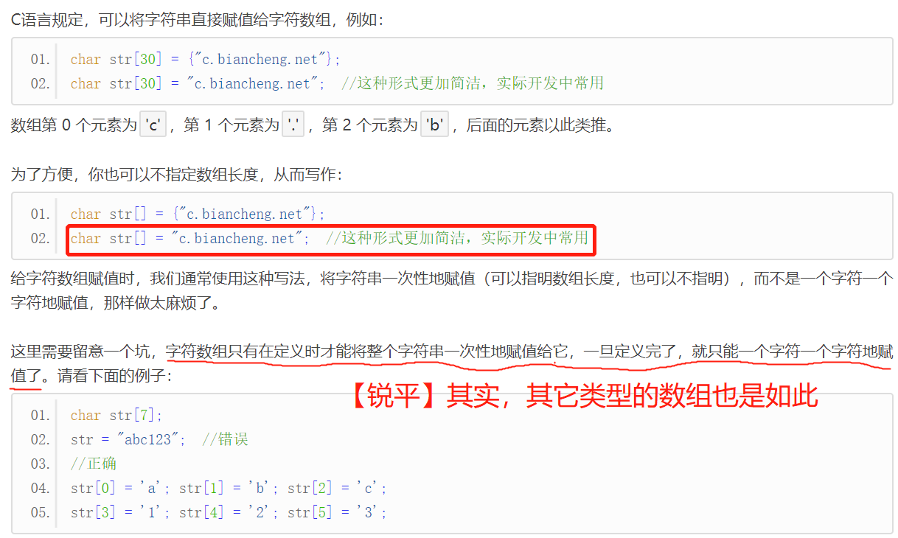

【本文结构】
- 0、参考文献
- 1、数组的定义和初始化
- 2、C语言判断数组中是否包含某个元素
- 3、C语言字符数组和字符串
- 字符数组（字符串）
- 字符串结束标志
- 字符串长度
- 字符串的输入和输出
- 字符串处理函数
- 4、C语言数组是静态的
- C语言数组为什么是静态的？
- C语言变长数组
- 数组的越界和溢出
【0 参考文献】
【1 数组的定义和初始化】
- 数组（Array）是一组相同类型的数据的集合，它所包含的每一个数据叫做数组元素（Element），所包含的数据的个数称为数组长度（Length）。
- 一维数组的定义如下：
dataType arrayName[length];
// dataType 为数据类型，arrayName 为数组名称，length 为数组长度。例如：
float m[12]; //定义一个长度为 12 的浮点型数组
char ch[9]; //定义一个长度为 9 的字符型数组
- 需要注意的是：
- 数组中每个元素的数据类型必须相同。
- 数组长度 length 最好是整数或常量表达式，例如 10、20*4 等，这样在所有编译器下都能运行通过；如果 length 中包含了变量，例如 n、4*m 等，在某些编译器下就会报错。
- 访问数组元素时，下标的取值范围为 0 ≤ index < length，过大或过小都会越界，导致数组溢出，发生不可预测的情况。
- 一般情况下，数组名会转换为数组的地址，需要使用地址的地方，直接使用数组名即可。
- 一维数组的初始化
// 在定义数组的同时赋值，数组元素的值由 {} 包围，各个值之间以 , 分隔。
int a[4] = {20, 322, 77, 222}
// 先定义数组再给数组赋值：
int a[4];
a[0]=20; //【锐平】先定义再赋值的方式，只能以索引的方式对元素逐个赋值。不能采用 a[4] = {20, 322, 77, 222} 的方式。
a[1]=322;
a[2]=77;
a[3]=222;
- 对于数组的初始化需要注意以下几点：
- 可以只给部分元素赋值。当{ }中值的个数少于元素个数时，只给前面部分元素赋值。 当赋值的元素少于数组总体元素的时候，剩余的元素自动初始化为 0：
- 对于short、int、long，就是整数 0；
- 对于char，就是字符 '\0'；
- 对于float、double，就是小数 0.0。
- 只能给元素逐个赋值，不能给数组整体赋值。
- 如给全部元素赋值，那么在定义数组时可以不给出数组长度。
// 1、我们可以通过下面的形式将数组的所有元素初始化为 0：(由于剩余的元素会自动初始化为 0，所以只需要给第 0 个元素赋值为 0 即可。)
int nums[10] = {0};
char str[10] = {0};
float scores[10] = {0.0};
// 2、例如给 10 个元素全部赋值为 1，只能写作：
int a[10] = {1, 1, 1, 1, 1, 1, 1, 1, 1, 1}; // 而不能写作： int a[10] = 1;
// 3、下面两个语句等价
int a[] = {1, 2, 3, 4, 5};
int a[5] = {1, 2, 3, 4, 5};
- 访问一维数组元素的格式为：
// 数组中的每个元素都有一个序号，这个序号称为下标。使用数组元素时，指明下标即可，形式为：
arrayName[index]
- index 为数组下标（Index），它的值从 0 开始。注意 index 的值必须大于等于零，并且小于数组长度，否则会发生数组越界，出现意想不到的错误
- 二维数组的定义如下：
dataType arrayName[length1][length2];
- 我们可以将二维数组看做一个 Excel 表格，有行有列，length1 表示行数，length2 表示列数，要在二维数组中定位某个元素，必须同时指明行和列。
- 二维数组在概念上是二维的，但在内存中是连续存放的；即二维数组的各个元素是相互挨着的，彼此之间没有缝隙。如何在线性内存中存放二维数组呢？有两种方式：
- 一种是按行排列， 即放完一行之后再放入第二行；
- 另一种是按列排列， 即放完一列之后再放入第二列。
- 在C语言中，二维数组是按行排列的。也就是先存放 a[0] 行，再存放 a[1] 行，以此类推。
- 二维数组的初始化
- 二维数组的初始化可以按行分段赋值，也可按行连续赋值。
// 例如，对于数组 a[5][3]，下面两种赋值方式是等价的：
// 按行分段赋值应该写作：
int a[5][3]={ {80,75,92}, {61,65,71}, {59,63,70}, {85,87,90}, {76,77,85} };
// 按行连续赋值应该写作：
int a[5][3]={80, 75, 92, 61, 65, 71, 59, 63, 70, 85, 87, 90, 76, 77, 85};
- 对二维数组的初始化还要注意以下几点：（原文有示例）
- 可以只对部分元素赋值，未赋值的元素自动取“零”值。
- 如果对全部元素赋值，那么第一维的长度可以不给出。
- 二维数组可以看作是由一维数组嵌套而成的；如果一个数组的每个元素又是一个数组，那么它就是二维数组。当然，前提是各个元素的类型必须相同。
- 根据这样的分析，一个二维数组也可以分解为多个一维数组，C语言允许这种分解。
- 例如，二维数组 a[3][4] 可分解为三个一维数组，它们的数组名分别为 a[0]、a[1]、a[2]。 这三个一维数组可以直接拿来使用。每个一维数组都有 4 个元素，比如，一维数组 a[0] 的元素为 a[0][0]、a[0][1]、a[0][2]、a[0][3]。
- 对无序数组的查询： 无序数组，就是数组元素的排列没有规律。无序数组元素查询的思路也很简单，就是用循环遍历数组中的每个元素，把要查询的值挨个比较一遍。
- 对有序数组的查询： 查询有序数组只需要遍历其中一部分元素。例如有一个长度为 10 的整型数组，它所包含的元素按照从小到大的顺序（升序）排列，假设比较到第 4 个元素时发现它的值大于输入的数字，那么剩下的 5 个元素就没必要再比较了，肯定也大于输入的数字，这样就减少了循环的次数，提高了执行效率。
- 字符数组：用来存放字符的数组。字符数组实际上是一系列字符的集合，也就是字符串（String）。
- 给字符数组（字符串）赋值

- 字符串结束标志（重点）
- 字符串是一系列连续的字符的组合，要想在内存中定位一个字符串，得知道它的 开头 和 结尾。
- 找到字符串的开头很容易，知道它的名字（字符数组名或者字符串名）就可以。
- 在C语言中，字符串总是以 '\0' 作为结尾，所以 '\0' 也被称为字符串结束标志，或者字符串结束符。
- '\0' 是 ASCII 码表中的第 0 个字符，英文称为 NUL，中文称为“空字符”。该字符既不能显示，也没有控制功能，输出该字符不会有任何效果，它在C语言中唯一的作用就是作为字符串结束标志。
- C语言在处理字符串时，会从前往后逐个扫描字符，一旦遇到 '\0' 就认为到达了字符串的末尾，就结束处理。'\0' 至关重要，没有 '\0' 就意味着永远也到达不了字符串的结尾。
- 在定义字符数组时，由 "" 包围的字符串会自动在末尾添加 '\0'。 下面有几个注意事项：
- 逐个字符地给数组赋值并不会自动添加 '\0'。
- 当用字符数组存储字符串时，要特别注意 '\0'，要为 '\0' 留个位置；这意味着，字符数组的长度至少要比字符串的长度大 1。

- 有些时候，程序的逻辑要求我们必须逐个字符地为数组赋值，这个时候就很容易遗忘字符串结束标志 '\0' 。原文举了一个例子： 将 26 个大写英文字符存入字符数组，并以字符串的形式输出，并详细说明了不注意 '\0' 可能带来的严重后果（见原文）。也提供了下面两种解决方案，后者更专业。
- 在函数内部定义的变量、数组、结构体、共用体等都称为局部数据。在很多编译器下，局部数据的初始值都是随机的、无意义的，而不是我们通常认为的“零”值。这一点非常重要，大家一定要谨记，否则后面会遇到很多奇葩的错误。

- 字符串长度
- 所谓字符串长度，就是字符串包含了多少个字符（不包括最后的结束符'\0'）。例如"abc"的长度是 3，而不是 4。
- 在C语言中，我们使用string.h头文件中的 strlen() 函数来求字符串的长度，它的用法为：
length = strlen(strname);
- strname 是字符串的名字，或者字符数组的名字；length 是使用 strlen() 后得到的字符串长度，是一个整数。
- 字符串的输出：在C语言中，有两个函数可以在控制台（显示器）上输出字符串，它们分别是：
- puts()：输出字符串并自动换行，该函数只能输出字符串。
- printf()：通过格式控制符 %s 输出字符串，不能自动换行。除了字符串，printf() 还能输出其他类型的数据。
#include <stdio.h>
int main()
{
char str[] = "http://c.biancheng.net";
printf("%s\n", str); // 使用 printf() 通过字符串名字输出
printf("%s\n", "http://c.biancheng.net"); //直接输出
puts(str); // 使用 puts() 通过字符串名字输出
puts("http://c.biancheng.net"); //直接输出
return 0;
}
>>> 以下为输出
http://c.biancheng.net
http://c.biancheng.net
http://c.biancheng.net
http://c.biancheng.net
# 注意，输出字符串时只需要给出名字，不能带后边的[]，例如，下面的两种写法都是错误的：
printf("%s\n", str[]);
puts(str[10]);
- 字符串的输入：在C语言中，有两个函数可以让用户从键盘上输入字符串，它们分别是：
- scanf()：通过格式控制符 %s 输入字符串。除了字符串，scanf() 还能输入其他类型的数据。
- gets()：直接输入字符串，并且只能输入字符串。
- 通常情况下，scanf() 和 gets() 是有区别的：
- scanf() 读取字符串时以空格为分隔，遇到空格就认为当前字符串结束了，所以无法读取含有空格的字符串。（scanf 的高级用法是可以读取含空格符的字符串的）
- gets() 认为空格也是字符串的一部分，只有遇到回车键时才认为字符串输入结束，所以，不管输入了多少个空格，只要不按下回车键，对 gets() 来说就是一个完整的字符串。换句话说，gets() 用来读取一整行字符串。
#include <stdio.h>
int main()
{
char str1[30] = { 0 };
char str2[30] = { 0 };
char str3[30] = { 0 };
// gets() 用法
printf("Input a string: ");
gets(str1);
//scanf() 用法
printf("Input a string: ");
scanf("%s", str2);
scanf("%s", str3);
puts(str1);
puts(str2);
puts(str3);
return 0;
}
>>>
Input a string: C C++ Java Python↙
Input a string: PHP JavaScript↙
>>> 以下为输出
C C++ Java Python
PHP
JavaScript
- int、char、float 等类型的变量用于 scanf() 时都要在前面添加 &，而数组或者字符串用于 scanf() 时不用添加 &，它们本身就会转换为地址。
- 用于输入输出的字符串函数，例如printf、puts、scanf、gets等，使用时要包含头文件 stdio.h 。
函数 | 说明 | 其它 |
strcat (arrayName1, arrayName2); | strcat 是 string catenate 的缩写，意思是把两个字符串拼接在一起。 arrayName1、arrayName2 为需要拼接的字符串。 strcat() 将把 arrayName2 连接到 arrayName1 后面，并删除原来 arrayName1 最后的结束标志 '\0' 。这意味着，arrayName1 必须足够长，要能够同时容纳 arrayName1 和 arrayName2，否则会越界（超出范围）。 strcat() 的返回值为 arrayName1 的地址。 | |
strcpy (arrayName1, arrayName2); | strcpy() 会把 arrayName2 中的字符串拷贝到 arrayName1 中，字符串结束标志'\0'也一同拷贝。 strcpy() 要求 arrayName1 要有足够的长度，否则不能全部装入所拷贝的字符串。 | |
strcmp (arrayName1, arrayName2); | strcmp 是 string compare 的缩写，意思是字符串比较， 字符本身没有大小之分，strcmp() 以各个字符对应的 ASCII 码值进行比较。strcmp() 从两个字符串的第 0 个字符开始比较，如果它们相等，就继续比较下一个字符，直到遇见不同的字符，或者到字符串的末尾。 返回值：若 arrayName1 和 arrayName2 相同，则返回0；若 arrayName1 大于 arrayName2，则返回大于 0 的值（被比较的两个字符在字符集中的编号之差）；若 arrayName1 小于 arrayName2，则返回小于0 的值（被比较的两个字符在字符集中的编号之差）。 |
- 在C语言中，数组一旦被定义后，占用的内存空间就是固定的，容量就是不可改变的，既不能在任何位置插入元素，也不能在任何位置删除元素，只能读取和修改元素，我们将这样的数组称为静态数组。
- 反过来说，如果数组在定义后可以改变容量，允许在任意位置插入或者删除元素，那么这样的数组称为动态数组。
- PHP、JavaScript 等解释型的脚本语言一般都支持动态数组，而 C、C++ 等编译型的语言一般不支持动态数组。
- 所以，C语言的数组一旦定义后长度就不能改变了，大家要注意这一点，不要尝试去插入或删除元素。 如果由于项目要求，必须要在数组中插入或者删除元素，该怎么办呢？没办法，只能再造一个新数组！（
- C语言数组为什么是静态的？
- 不能插入和删除数组元素有时候会非常麻烦，例如（略）。 数组元素都是紧挨着排布的，中间没有空隙，不管是插入元素还是删除元素，都得移动该元素后面的内存：
- 在第 i 个元素后面插入一个新元素时，第 i 个元素后面的所有元素都要往后移动一个元素的位置，从而给新元素腾出位置来。如果该数组后面紧跟的是其它有用数据，那么为了防止覆盖有用数据，还不敢直接往后移动元素，必须得重新开辟一块内存，把所有的元素都复制过去。
- 删除第 i 个元素就比较简单了，不管三七二十一，把第 i 个元素后面的所有元素都向前移动即可。
- 插入和删除数组元素都要移动内存，甚至重新开辟一块内存，这是相当消耗资源的。如果一个程序中有大量的此类操作，那么程序的性能将堪忧，这有悖于「C语言非常高效」的初衷，所以C语言并不支持动态数组。
- C语言变长数组 —— 使用指针指明数组的长度
- 各种编译器都能很好地支持 C89 标准，但对 C99 的支持却不同：开源组织的 GCC 和 Xcode 使用的 LLVM/Clang 已经支持了大部分（几乎全部）的 C99 标准，而微软的 VC、VS 对 C99 却不感兴趣，直到后来的 VS2013、VS2015、VS2017 才慢慢支持，而且支持得还不好。 为什么要讨论这个问题呢？因为 C89 和 C99 对数组做出了不同的规定：
- 在 C89 中，必须使用常量表达式指明数组长度；也就是说，数组长度中不能包含变量，不管该变量有没有初始化。
- 而在 C99 中，可以使用变量指明数组长度。
- 也就是说，不是所有的C语言编译器都能支持变长数组。

- 变量的值在编译期间并不能确定，只有等到程序运行后，根据计算结果才能知道它的值，所以数组长度中一旦包含了变量，那么数组长度在编译期间就不能确定了，也就不能为数组分配内存了，只有等到程序运行后，得到了变量的值，确定了具体的长度，才能给数组分配内存（即：定义变长数组的语句是在变量的值确定的那条语句之后），我们将这样的数组称为变长数组(VLA, Variable Length Array)。
- 普通数组（固定长度的数组）是在编译期间分配内存的，而变长数组是在运行期间分配内存的。
- 变长数组仍然是静态数组： 变长数组是说数组的长度在数组定义之前可变，一旦数组被定义，数组的长度就不能再改变了，即使之后决定数组长度的那个变量被赋予了其它的值。所以变长数组的容量也是不能扩大或缩小的，它仍然是静态数组。

- 数组越界： C语言数组是静态的，不能自动扩容，当下标小于零或大于等于数组长度时，就发生了越界（Out Of Bounds），访问到数组以外的内存。如果下标小于零，就会发生下限越界（Off Normal Lower）；如果下标大于等于数组长度，就会发生上限越界（Off Normal Upper）。
- C语言为了提高效率，保证操作的灵活性，并不会对越界行为进行检查，即使越界了，也能够正常编译，只有在运行期间才可能会发生问题。
- 当发生数组越界时，如果我们对该内存有使用权限，那么程序将正常运行，但会出现不可控的结果（如上例所示）；如果我们对该内存没有使用权限，或者该内存压根就没有被分配，那么程序将会崩溃。
- 数组溢出： 当赋予数组的元素个数超过数组长度时，就会发生溢出（Overflow）。
- 一般情况下数组溢出不会有什么问题，顶多是丢失多余的元素。但是当以字符串的形式输出字符数组时，就会产生不可控的情况（因为字符串结束标志随着多余元素的丢失也丢失了）。
- 所以，在用字符串给字符数组赋值时，要保证数组长度大于字符串长度，以容纳结束符'\0'。